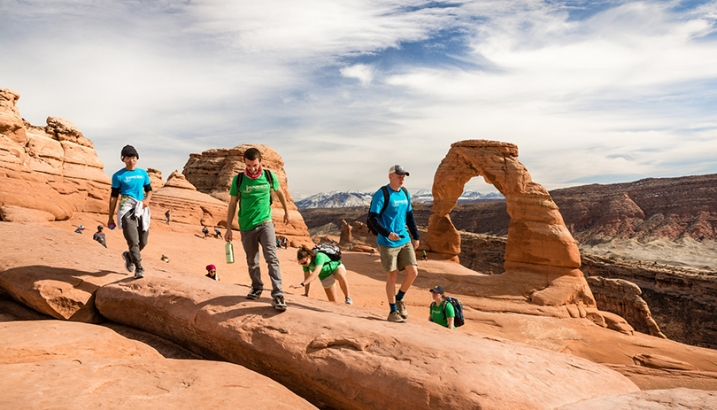

About the Coyotes
"Desert Ridge University is to promote learning by engaging with students in advancing scholarly inquiry, cultivating critical and creative thought, and generating knowledge. Our active partnerships with local and global communities contribute to a sustainable common good. We educate student by helping them learn outside the classroom to apply their knowledge."
- University Mission Statement
Desert Ridge University is a public institution that was founded in 2015 in St. George, Utah. We have a total undergraduate enrollment of 6, 870, its setting is rural, and the campus is 135 acres. It utilizes a semester-based academic calendar, which extends to 17 weeks each semester. Being surrounded by many scenic and tourist areas, we believe that students should be learning and applying their knowledge outside of the classroom. Because of this belief, students only spend 1-2 days inside a classroom setting and then the rest of the week at scenic areas such as Zion's National Park, the Grand Canyon, and several others. Destinations are determined according to each student's aligned major.
Desert Ridge University offers up to 10 degrees, 7 of which are at a bachelor level. Students who love the outdoors and are interested in pursuing a career that involves getting their hands dirty, would be a great addition to the Coyote Pack!
